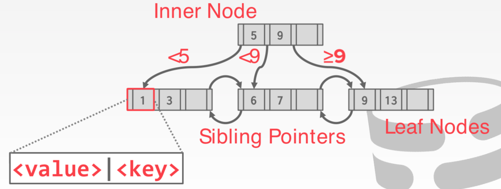
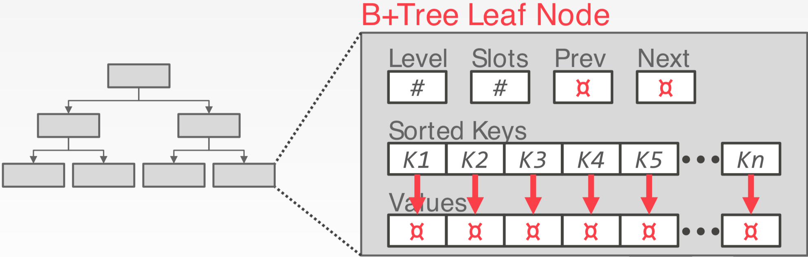

树索引（I）
表索引
表索引是一个表的列的子集的一个副本，被组织起来或者被排序，在使用这些列的子集时可以提高访问效率。
DBMS 保证表的内容和索引的内容是同步的。
DBMS 负责找出最合适的索引来执行每个查询。
每个数据库都需要权衡建立索引的数量。
- 存储开销
- 维护开销
B 树家族
有一个特定的数据结构称之为 B-Tree，但是人们还使用这个形式来表示一类数据结构。
- B-Tree
- B+Tree
- B^{link}-Tree
- B*Tree
B+Tree
B+Tree 是一个自平衡的树数据结构，保持数据有限，以时间复杂度 O(log n) 查找、顺序访问、插入、删除。
- 二叉搜索树的泛化，即节点可以有两个以上的子节点。
- 针对读取和写入大量数据的系统进行了优化。
论文《无处不在的B树》：link
性质
B+Tree 是一个 M-路 搜索树，并且有下面的性质：
- 保持平衡（例如，每个叶节点在相同的深度）
- 除了根节点，每个内部节点至少是半满的 \frac{M}{2}-1 \leqslant \#keys \leqslant M-1
- 每个内部有 k 个键的节点有 k+1 个非空孩子

节点
在 B+Tree 内部的每个节点包含一个 key/value 对。
- key 是列或者多个列（创建索引的列）
- value 根据内部节点或者叶子节点内容不同
数组总是保持以 key 的顺序保持有序。
叶节点值
方式 #1：记录 ID，指向索引条目对应的元组位置的指针。
PostgreSQL，SQL Server，DB2，ORACLE
方式 #2：元组数据，实际的元组内容保存在页节点上，辅助索引必须将记录ID存储为其值。
SQLite，SQL Server，MySQL，ORACLE


B-Tree vs. B+Tree
1972年最初的 B-Tree 保存 keys 和 values 在树的所有节点内。
- 每个 key 仅在树中出现一次，更加节省空间
B+Tree 仅仅在页节点中爆粗，内部节点仅仅用于查找过程。
B+Tree 插入
- 找到正确的叶节点 L
- 将数据入口以有序的方式放入 L
- 如果 L 有足够的空间，结束！
- 否则，必须将 L 分裂为 L 和一个新的几点 L2
- 均匀重新分配条目，复制中间的键。
- 将指向L2的索引条目插入到L的父级中。
- 为了分裂内部节点，重新均匀分配条目，但是上推中间 key。
B+Tree 删除
- 从根节点开始，找到包含条目的叶L
- 删除条目
- 如果 L 是半满的，结束！
- 如果 L 仅有 M/2-1 个条目
- 尝试重新分配，借用兄弟姐妹（邻近的与 L 具有相同父节点的节点）
- 如果重新分配失败，合并 L 和兄弟节点
- 如果发生合并，必须从 L 的父节点删除条目（指向 L 或者兄弟）
B+Tree 实践
典型的填充因子：67%
- 平均扇出 = 2 * 100 * 0.67 = 134
典型的容量：
- 高度4：1334 = 312900721 条目
- 高度3：1333 = 2406104 条目
每层的页数：
- 第一层 = 1页 = 8KB
- 第二次 = 134页 = 1MB
- 第三层 = 17956页 = 140MB
聚簇索引
表按照主键有序存储。既可以是 heap 组织存储，也可以是 index 组织存储。
一些 DBMS 总是使用聚簇索引。
- 如果一个表不包含主键，DBMS 自动生成一个隐藏的列 id 的主键。
其它 DBMS 不能使用。
选择条件
DBMS 可以使用 B+Tree 索引，如果查询有任意一个属性。
例如，在
不是所有 DBMS 支持这个特性。
例如对于 hash 索引，所有的查找 key 必须是所有属性。
B+Tree 设计选择
- 节点大小
- 合并阈值
- 可变长度键
- 非唯一索引
- 内部节点搜索
优化
- 前缀压缩
- 后缀截断
- 批量插入（先将 key 排序，然后从底向上构建索引）
- 指针混写
结论
久负盛名的 B+Tree 永远是你的 DBMS 一个不错的选择。